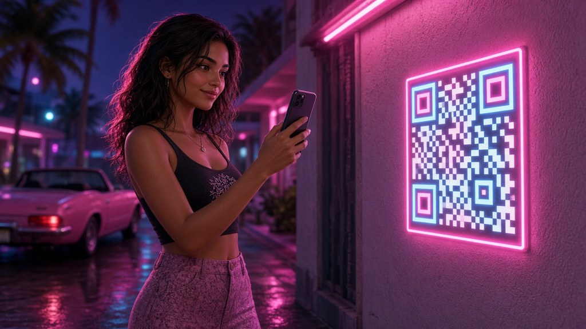

Peekhole questions
What Happens If You Scan a GTA 6 QR Code? | Peekhole

Short answer: Nothing in the game, but something funny on your real phone. Players who scanned GTA 6's in-world QR codes with an actual phone landed on a parody page on Rockstar's own website saying the site was "seized" by the Federal Investigation Bureau, GTA's version of the FBI.
Where are the QR codes?
TweakTown reports players finding them on a bathroom poster, a "for sale" sign, the back of a van and a motel poster. The clip that blew it up shows Spanish streamer Rubius trying his in-game phone first, getting nothing, then pulling out his real one.
What does the seized page say?
It is a spoof warrant with a Vice City Police badge. The punchline: the FIB is short on funding, so it sells ad space on seized sites. TweakTown says the fake ads change between visits, from a "Dark Web Dating" ad to a pet delivery service offering black rhinos.
What does Peekhole have to do with it?
Peekhole is GTA 6's parody creator-subscription site, the one fans compare to OnlyFans. Its branding first showed up with a QR code on a Jack of Hearts poster in Rockstar's "An Extended Look" video. Fan tracker Peekhole.de lists Rockstar's rsg.ms/qr1 short link as a QR destination and ties the seized pages to Peekhole's car stickers around Leonida. Rockstar itself hasn't explained Peekhole, so treat that link as a fan finding, not an official statement.
Is it safe to scan?
The reported codes point to Rockstar's own site. Outside the game, the usual rule still applies: don't scan codes you don't recognize.
Sources
- TweakTown: Rockstar website seized by authorities after players scan in-game GTA 6 QR code
- Peekhole.de: Peekhole GTA 6 QR code and seized pages (fan tracker)
- GTA Culture: Peekhole in GTA 6 explained
Peekhole take: Rockstar built a peek hole straight into your real phone and then had the feds slam it shut. Respect.